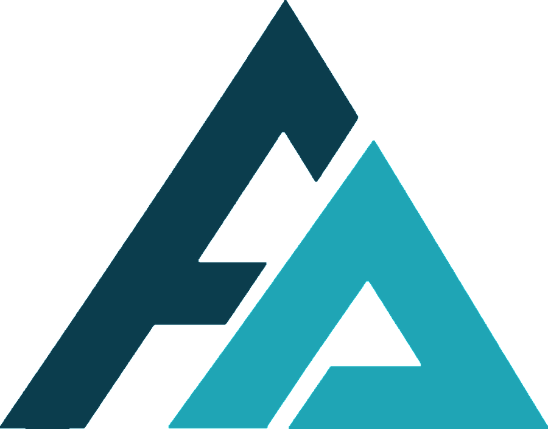

El ícono de la Región de Los Lagos. Una ascensión que cruza bosque siempreverde y zona de lahar antes de elevarse a una cumbre con vistas a los volcanes Osorno y Tronador, los lagos Chapo y Llanquihue, y las primeras vistas a la Patagonia Norte. Lo puedes hacer en 1 día (jornada larga y exigente) o en 2 días con campamento, la opción que recomendamos para disfrutar y aprender técnica de montaña.
Ficha técnica
| Ubicación | Volcán Calbuco, Reserva Nacional Llanquihue (comunas de Puerto Montt / Puerto Varas) |
|---|---|
| Altitud máxima | ~2.003 msnm |
| Desnivel aprox. | ~1.600 m de ganancia |
| Distancia | 14–18 km ida y vuelta |
| Duración | 1 día (jornada larga) o 2 días / 1 noche |
| Dificultad | Media-Alta · exigencia física alta |
| Grupo | 2 a 4 pasajeros |
| Temporada | Octubre a abril (mejor ventana de clima) |
| Edad mínima | 16 años (menores con autorización y adulto responsable) |
| Precio | $180.000 por persona |
Itinerario · 2 días
Día 1 — Aproximación y campamento
- 08:00 Salida desde Puerto Montt (transporte incluido).
- 09:30 Llegada al sector de acceso, registro y briefing de seguridad.
- 10:00 Inicio de marcha por bosque y zona de lahar.
- 13:00 Almuerzo en ruta.
- 15:00 Llegada a campamento base. Armado de carpas.
- 16:00 Taller: uso de crampones, piolet y autodetención.
- 19:30 Cena caliente y planificación de la cumbre.
Día 2 — Cumbre y descenso
- 04:30 Desayuno y salida nocturna hacia la cumbre.
- 05:00 Ascenso por zona de nieve con técnica de cordada.
- ~10:00 Cumbre (sujeto a clima y estado del grupo).
- 10:30 Inicio del descenso.
- 13:00 Desarme de campamento.
- 16:00 Regreso a Puerto Montt.
Opción 1 día
Salida de madrugada desde Puerto Montt, ascenso directo a cumbre y regreso el mismo día (jornada total de 14–16 h). Requiere mejor estado físico y se realiza solo con pronóstico favorable.
La cumbre nunca está garantizada: las condiciones de montaña y la seguridad del grupo mandan. Una expedición exitosa es la que vuelve completa.
Qué incluye
- Guía certificado WFR en terreno
- Equipo técnico: casco, arnés, crampones y piolet
- Transporte desde Puerto Montt (ida y vuelta)
- Alimentación en ruta
- Carpas y equipo de campamento grupal (2 días)
- Seguro de accidentes en montaña
- Kit de primeros auxilios WFR
- Charla y formación técnica en terreno
Qué no incluye
- Botas de montaña (consultar por arriendo)
- Ropa de montaña y artículos personales
- Saco de dormir y colchoneta (opción 2 días)
- Mochila e hidratación personal
Equipo requerido (lo trae el pasajero)
- Botas de trekking de caña alta, suela rígida
- Sistema de 3 capas (térmica, polar/pluma, impermeable)
- 2 pares de guantes
- Gorro de abrigo y buff
- Lentes de sol categoría 3–4
- Protector solar y labial
- Bastones de trekking
- Mochila 30–40 litros
- Linterna frontal con pilas de recambio
- Saco de dormir y colchoneta (2 días)
- Botella o bolsa de agua (mín. 2 litros)
- Snacks y frutos secos personales
Requisitos y condiciones
- Estado físico: caminata o trote regular el mes previo. Para la opción de 1 día se exige mejor fondo físico.
- Experiencia: no se requiere experiencia técnica; la técnica de nieve se enseña en ruta. Sí se recomienda haber hecho trekking de día completo.
- Salud: declaración de salud y aptitud física firmada antes de la actividad.
- Conducta: no consumir alcohol ni drogas, seguir las instrucciones del guía y no separarse del grupo.
- Clima: ante condiciones inseguras se reagenda sin costo o se ofrece ruta alternativa.
Políticas de reserva
- Para asegurar tu cupo se abona el 50% del valor; el saldo se paga antes de la salida.
- La actividad se confirma 7 días antes según el pronóstico. Si cancelas antes de esa confirmación, se devuelve el 100% del abono.
- Si Filo Austral cancela por clima o fuerza mayor, se reagenda o se devuelve la totalidad de lo pagado.
- Debes completar la ficha del pasajero y la declaración jurada (Ley de Turismo 20.423) al menos 5 días antes.
Emergencias en montaña
¿Listo para subir el Calbuco?
Cupos limitados a 4 pasajeros por salida. Escríbenos y coordinamos fecha, nivel y logística.
Reservar por WhatsApp